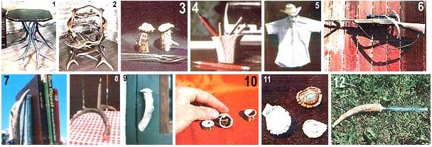

In the hands of an imaginative craftsperson, deer, moose, and elk racks can become "horns of plenty"!
Whether you have a supply of antlers left over from hunting or have collected winter-shed racks during hiking and camping trips, the horns can be turned into numerous craft items-just a few of which are shown here-either for your own use or for sale.
And even if you don't already have a collection of antlers to work with, you can probably locate some at auctions, garage sales, or secondhand stores. Of course, it's much more fun (and less expensive) to gather them in the great outdoors, using the methods I described in "Trophies for the Taking" (MOTHER NO. 73, page 106). Regardless of how you come by your raw material, though, I'm sure you'll agree that antler craft objects can be both unique and lovely .. . and can also provide constant reminders of the miraculous cycles of nature.
PHOTO 1: ANTLER-SUPPORTED TABLES can be unstable, so it's best to build them low. This three-legged example adorns an antique cabin in a national park, and is a companion to the chair in Photo 2.
PHOTO 2: An ELK- AND MOOSE-HORN CHAIR would require plenty of antler material, a few wellplaced bolts, and more than the average person's share of perseverance and ingenuity. This piece was made around the turn of the century . . . without plans, and using crude tools. However, the fact that it exists at all is proof that it could (well, more or less, anyway) be duplicated.
PHOTO 3: DEER-HORN SALT AND PEPPER SHAKERS can be made with an electric drill using a rotary rasp attachment, which slowly hollows out the inside of antler butts. The bony domes on these shed horns were also smoothed with the rasp ... then holes were drilled for seasonings to sift through. Cork stoppers plug the bottoms, and white enamel paint adds identifying letters.
PHOTO 4: This PENCIL HOLDER has been carved from a piece of elk antler (a large caribou or moose horn would also serve this purpose). To make one, use a hacksaw to sever a section of the main beam, and hollow out the softer center with a rotary rasp. Glue a piece of felt on the holder's underside to prevent it from marring the desk top.
PHOTO 5: Here are a HATBAND and a BOLO TIE that go well together. To make the band, simply saw thin chips from an antler . . . drill four 1/8" holes to form a square in each one . . . pull two strips of leather bootlacing through the holes and crisscross them over each chip's face . . . and knot the double string of evenly spaced "buttons" into a circle, leaving "tassels" a couple of inches long.
Start the bolo tie by cutting the beam of an elk antler diagonally to form an oval . . . again, make four 1/8" holes in the chip's face . . . then drill two more holes, running from the top to the bottom, for the tie to slide through. Make the "X" across the chip from a short strip of leather lacing, trimming any excess flush with the back side. Now, file the edges smooth, and do the same for the surfaces of two antler tips-which will dangle from the tie's ends-before drilling them with a single hole each. Thread the slide onto an appropriate length of lacing, add the tips, knot each end of the leather thong ... and you're done.
PHOTO 6: A GUN RACK like this one can be constructed of two deer antler forks, which are secured to the wall with nails or wood screws. This same arrangement can also make a good coat and hat tree, provided you blunt the horn tips so that they won't pierce holes in your clothing.
PHOTO 7: A pair of ANTLER-FORK BOOKENDS can really dress up a tabletop. They're made by cutting two 4" X 7" X 7" triangles (which will slide under the books) from metal that's somewhat thicker than a cookie sheet. After rounding the points and smoothing the sharp edges of each one, bend up an inch of the short side at a right angle. Now, cut two moreor-less matching antler forks, set them on the sheets against the bent sections, and bore 1/8"-diameter holes through the upright metal and well into each fork's base. Next, spray-paint the metal pieces black and let them dry ... then use metal screws to attach the horns to the bases.
PHOTO 8: A CANDLEHOLDER CENTERPIECE can be made by turning a deer rack upside down and drilling one or more 314" (or candle-sized) holes partway through the antler at strategic points.
PHOTO 9: DEER-HORN HANDLES will add a rustic touch to doors, cabinets, drawers, windows, or-for that matter-almost any place'around the house where knobs or pulls are needed. The one pictured here-spotted in a doctor's office-was cut flush with and fastened to the door only at the lower end.
PHOTO 10: HORN RINGS can be hot-selling items. To make one, cut a cross section of the diameter you want, drill a pilot hole in its center, then hollow it out and smooth all the edges with a rotary rasp. (Be sure not to use much force, though, or the ring may split.)
PHOTO 11: ANTLER BELT BUCKLES may be a bit beyond the skill of some folks . . . at any rate, these specific examples are pretty danged intimidating! One features inlaid turquoise and silver, while the other's pawprint design is all-silver inlay. Both were made from bleached antler bases similar to the one shown next to them.
PHOTO 12: A custom-crafted LETTER OPENER can be fashioned by simply inserting a blade securely into an antler tip. I once saw a paper cutter whose handle and blade were shaped from a single piece of elk horn, but that would require so much patience and skill that I believe I'd choose a simpler project . . . at least for "openers"!
EDITOR'S NOTE: Information on ordering MOTHER NO. 73 - which contained Mr. Roose's advice on finding winter-shed antlers - can be found on page 68.
|
 |
|
|